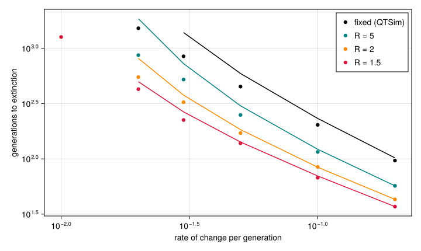
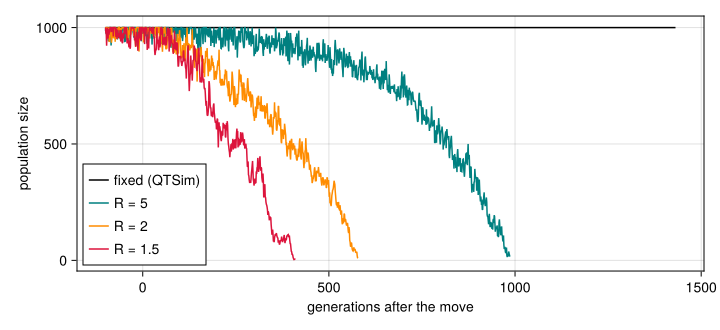

Demography and evolutionary rescue
Simon Frost
- Overview
- Setup
- A density-regulated population
- How fast can the environment change?
- A population in decline
- Summary
Overview
QTSim, and with it the paper (Pagel et al. 2025), keeps the population at a fixed size: however few individuals survive selection, they produce PopSize offspring. A population that falls behind a moving optimum loses nothing until fewer than two survive a single generation, and then it is gone. Real populations shrink when their mean fitness falls, smaller populations have less genetic variance to adapt with, and a population that adapts fast enough can recover. Whether evolution prevents extinction then depends on a race between adaptation and decline: evolutionary rescue (Gomulkiewicz and Holt 1995).
QTLSim has a density-regulated alternative, Demography = :beverton_holt. This vignette asks how much the fixed size matters for the paper’s question: how fast can the environment change before a population that adapts to it goes extinct? It compares the simulations with the moments lowering of the life cycle, the deterministic predictions of quantitative-genetic theory for the same model (Lande 1976; Bürger and Lynch 1995).
Setup
using QTLSim
import Catlab # loads the categorical layer, for run_moments
using CairoMakie, Printf, Statistics
CairoMakie.activate!(type = "png")A density-regulated population
With n survivors, carrying capacity K = PopSize and R = GrowthRate offspring per survivor at low density, the next generation has $\mathrm{Poisson}\big(Rn/(1 + (R-1)n/K)\big)$ individuals, at most $K$ (noffspring). When a fraction $\bar W$ survives, the population settles near $K (R\bar W - 1)/((R-1)\bar W)$, and it shrinks when $R\bar W < 1$. Under stabilising selection $\bar W$ is close to one, so the population stays close to $K$.
The parameters are those of Adaptation to a moving optimum, with 5000 generations of stabilising selection before the optimum starts to move. The growth rates compared are $R = 5$, $2$ and $1.5$, against QTSim’s fixed size.
base = Params(PopSize = 1000, Ploidy = 2, NoQTL = 100, NoGenerations = 7000,
PhenotypeVar = 0.022, Heritability = 0.32, MutationScalar = 0.004,
MutationRatePerGamete = 1e-4, RecombPoissonMean = 3.0, InitFitnessSD = 5.0,
MoveFitnessSDGen = 5000, MoveType = :continuous)
demog = [("fixed (QTSim)", (Demography = :fixed,)),
("R = 5", (Demography = :beverton_holt, GrowthRate = 5.0)),
("R = 2", (Demography = :beverton_holt, GrowthRate = 2.0)),
("R = 1.5", (Demography = :beverton_holt, GrowthRate = 1.5))]
eq = Vector{Any}(undef, length(demog))
Threads.@threads :greedy for k in eachindex(demog)
q = Params(base; demog[k][2]..., MoveFitnessSDGen = -1, NoGenerations = 5000)
o = simulate(q; seed = k)
eq[k] = (; N = mean(o.popsize[4001:end]), W = mean(o.mean_fitness[4001:end]),
VG = mean(o.geno_var[4001:end]), sd = mean(sqrt.(o.pheno_var[4001:end])),
m = run_moments(q))
end
println("| demography | population size | predicted from W̄ | moments lowering | mean fitness | V_G | phenotypic SD |")
println("|:--|--:|--:|--:|--:|--:|--:|")
for (k, (name, kw)) in enumerate(demog)
e = eq[k]; R = get(kw, :GrowthRate, Inf)
pred = isinf(R) ? 1000.0 : 1000 * (R * e.W - 1) / ((R - 1) * e.W)
@printf("| %s | %.0f | %.0f | %d | %.4f | %.4f | %.3f |\n", name, e.N, pred, e.m.popsize[end], e.W, e.VG, e.sd)
end| demography | population size | predicted from W̄ | moments lowering | mean fitness | V_G | phenotypic SD |
|---|---|---|---|---|---|---|
| fixed (QTSim) | 1000 | 1000 | 1000 | 0.9949 | 0.0935 | 0.329 |
| R = 5 | 986 | 999 | 999 | 0.9951 | 0.0841 | 0.314 |
| R = 2 | 979 | 994 | 996 | 0.9940 | 0.1204 | 0.367 |
| R = 1.5 | 972 | 990 | 993 | 0.9952 | 0.0820 | 0.311 |
At equilibrium every population is within 3% of its carrying capacity, a little below the value predicted from its mean fitness: random fluctuations in size, which the prediction ignores, pull the average down. The phenotypic standard deviation, which sets the scale of the rates below, is about a third.
How fast can the environment change?
Each demography faces seven rates of change, from 0.005 to 0.2 per generation (about 1.5% to 60% of a phenotypic standard deviation), six populations each, for up to 2000 generations after the move. The moments lowering gives each rate a deterministic prediction: the generation in which fewer than two individuals are expected to survive, or, under density regulation, the population is expected to fall below one.
rates = [0.005, 0.01, 0.02, 0.03, 0.05, 0.1, 0.2]
jobs = [(i, d, rep) for i in eachindex(demog) for d in rates for rep in 1:6]
res = Vector{Any}(undef, length(jobs))
Threads.@threads :greedy for k in eachindex(jobs)
i, d, rep = jobs[k]
o = simulate(Params(base; demog[i][2]..., MoveFitnessSD = d); seed = 1000k + rep)
res[k] = (; i, d, extinct = o.extinct, T = o.extinct ? o.extinct_gen - 5000 : missing)
end
predicted = Dict((i, d) => run_moments(Params(base; demog[i][2]..., MoveFitnessSD = d))
for i in eachindex(demog) for d in rates)
Tpred(i, d) = (m = predicted[(i, d)]; m.extinct ? m.extinct_gen - 5000 : missing)
println("| rate | ", join(first.(demog), " | "), " |")
println("|:--|", repeat("--:|", length(demog)))
for d in rates
cells = map(eachindex(demog)) do i
rs = filter(r -> r.i == i && r.d == d, res)
died = filter(r -> r.extinct, rs)
tp = Tpred(i, d)
s = length(died) >= 3 ? @sprintf("%d", round(Int, median(r.T for r in died))) : "survive"
@sprintf("%s (%d/6) [%s]", s, length(rs) - length(died), ismissing(tp) ? "survives" : string(tp))
end
@printf("| %.3f | %s |\n", d, join(cells, " | "))
end| rate | fixed (QTSim) | R = 5 | R = 2 | R = 1.5 |
|---|---|---|---|---|
| 0.005 | survive (6/6) [survives] | survive (6/6) [survives] | survive (6/6) [survives] | survive (6/6) [survives] |
| 0.010 | survive (6/6) [survives] | survive (6/6) [survives] | survive (4/6) [1650] | 1266 (0/6) [855] |
| 0.020 | 1519 (0/6) [survives] | 867 (0/6) [792] | 548 (0/6) [433] | 427 (0/6) [324] |
| 0.030 | 846 (0/6) [1548] | 522 (0/6) [422] | 326 (0/6) [265] | 224 (0/6) [208] |
| 0.050 | 450 (0/6) [509] | 250 (0/6) [225] | 171 (0/6) [153] | 138 (0/6) [125] |
| 0.100 | 203 (0/6) [205] | 116 (0/6) [107] | 84 (0/6) [78] | 68 (0/6) [66] |
| 0.200 | 96 (0/6) [94] | 57 (0/6) [54] | 43 (0/6) [41] | 37 (0/6) [36] |
Each cell is the median time to extinction after the move, the number of the six populations alive 2000 generations after it (in parentheses), and the moments lowering’s prediction [in brackets].
fig = Figure(size = (720, 430))
ax = Axis(fig[1, 1], xscale = log10, yscale = log10, xlabel = "rate of change per generation",
ylabel = "generations to extinction")
colors = [:black, :teal, :darkorange, :crimson]
for (i, (name, _)) in enumerate(demog)
ds = Float64[]; Ts = Float64[]
for d in rates
died = filter(r -> r.i == i && r.d == d && r.extinct, res)
length(died) >= 3 && (push!(ds, d); push!(Ts, median(r.T for r in died)))
end
scatter!(ax, ds, Ts, color = colors[i], label = name)
pd = [d for d in rates if !ismissing(Tpred(i, d))]
lines!(ax, pd, [Tpred(i, d) for d in pd], color = colors[i])
end
axislegend(ax, position = :rt)
fig
Figure 1: Time to extinction after the optimum starts moving, against the rate of change (medians of six populations; populations alive after 2000 generations are not shown). Lines: the deterministic prediction of the moments lowering.
Density regulation shortens every population’s life, and the lower the growth rate, the shorter. At the fast rates the population is far behind the optimum within a few generations: under QTSim’s fixed size it dies when survival collapses, while a density-regulated population is already shrinking, by a factor $R\bar W$ each generation, as soon as its mean fitness falls below $1/R$. With $R = 1.5$ populations die in about a third of the time they last at a fixed size.
The sustainable rate moves too. At a fixed size every population survived 0.01 per generation, about 3% of a standard deviation, the paper’s estimate of the maximum sustainable rate. With $R = 2$ two of six died at that rate, and with $R = 1.5$ all six did; only 0.005, about 1.5% of a standard deviation, was sustained by every demography. A population that cannot grow fast enough to make good its losses cannot sustain the rates a population of fixed size can.
The moments lowering predicts the time to extinction closely at fast rates, where the outcome is decided by the lag. At slow rates it is less accurate, and it predicts that the fixed-size population survives 0.02 per generation, which none of the six did: the Gaussian approximation’s genetic variance and its deterministic population size leave out the drift and the fluctuations in size that decide whether a slowly declining population lasts.
A population in decline
The trajectories of one population of each demography at 0.02 per generation show the difference: the fixed-size population stays at 1000 until it dies, while the density-regulated populations shrink, faster the lower their growth rate, and die small.
fig = Figure(size = (720, 330))
ax = Axis(fig[1, 1], xlabel = "generations after the move", ylabel = "population size")
for (i, (name, kw)) in enumerate(demog)
o = simulate(Params(base; kw..., MoveFitnessSD = 0.02); seed = 7)
k = findall(>=(4900), o.gen)
lines!(ax, o.gen[k] .- 5000, o.popsize[k], color = colors[i], label = name)
end
axislegend(ax, position = :lb)
fig
Figure 2: Population size after the optimum starts moving at 0.02 per generation, one population of each demography.
Summary
QTSim’s fixed population size is not neutral for the paper’s question. A population that is refilled every generation pays nothing for being maladapted until it dies, so it sustains faster change, and lasts longer once it cannot, than a population whose size follows its fitness. How much faster depends on how fast the population could regrow: with a few offspring per survivor the maximum sustainable rate is about half the rate at a fixed size. The paper’s estimate of about 3% of a phenotypic standard deviation per generation is therefore an upper bound that holds for populations able to make good their losses.
The density-regulated model is QTLSim’s, not QTSim’s, so QTSim cannot check it, but SLiM can: the model slim_script generates from the same life cycle agrees with the kernel (validate/slim/compare_demography.jl). At 0.01 per generation with $R = 1.5$, all of 40 populations died in each backend, on average 1341 and 1326 generations after the move, and at 0.02 with $R = 2$, after 583 and 562.
Bürger, Reinhard, and Michael Lynch. 1995. “Evolution and Extinction in a Changing Environment: A Quantitative-Genetic Analysis.” Evolution 49 (1): 151–63. https://doi.org/10.1111/j.1558-5646.1995.tb05967.x.
Gomulkiewicz, Richard, and Robert D. Holt. 1995. “When Does Evolution by Natural Selection Prevent Extinction?” Evolution 49 (1): 201–7. https://doi.org/10.1111/j.1558-5646.1995.tb05971.x.
Lande, Russell. 1976. “Natural Selection and Random Genetic Drift in Phenotypic Evolution.” Evolution 30 (2): 314–34. https://doi.org/10.1111/j.1558-5646.1976.tb00911.x.
Pagel, Mark, Jacob D. Gardner, and Andrew Meade. 2025. “Quantitative-Genetic Analysis of Directional Adaptation Suggests Low Maximum Sustainable Rates of Change in Agreement with Data from Field Populations.” Scientific Reports 15. https://doi.org/10.1038/s41598-025-24445-2.